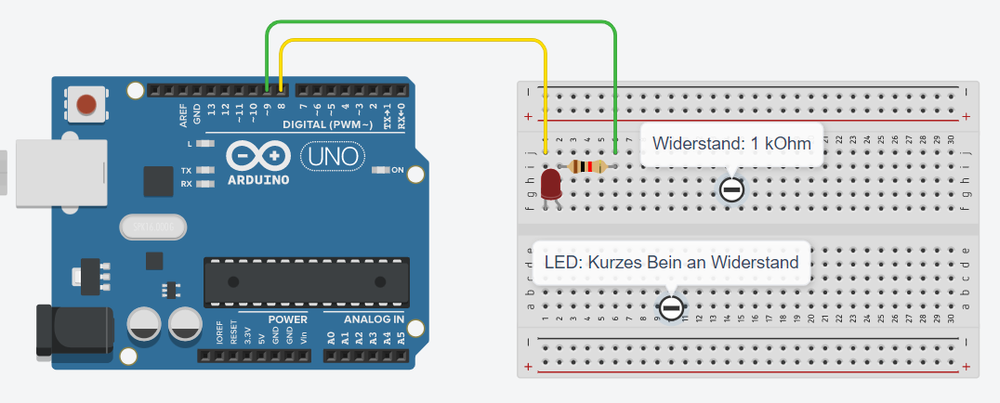

Wir arbeiten mit der gleichen Schaltung: 
Programmiere folgenden Code:
void setup() {
pinMode(8, OUTPUT);
pinMode(9, OUTPUT);
digitalWrite(9,LOW); // Pin 9 = Minuspol der LED
}
void loop() {
digitalWrite(8, HIGH); // Pin 8 = Pluspol -> LED ein
delay(500); // 500 ms Pause: LED leuchtet
digitalWrite(8, LOW); // Pin 8 = Minuspol -> LED aus
delay(500); // 500 ms Pause: LED leuchtet nicht.
}
Die setup-Methode läuft einmal ab, wenn der Mikrocontroller an den Strom angeschlossen wird. Hier stehen Befehle, die zu Beginn ausgeführt werden müssen. In unserem Beispiel, wird der Pin 9 dauerhaft auf LOW geschaltet.
Die loop-Methode läuft immer wieder ab. Die Befehle LED ein, Pause, LED aus, Pause wiederholen sich solange, wie der Mikrocontroller am Strom angeschlossen ist.